Construct multiple slots
Construct multiple slots in the synchronous environment
You can create multiple slots in the synchronous as well as the ordered environment. There are slight differences between the two environments.
Choose Home tab→Solids group→Hole list→Slot .
Click the first sketch to define the slot path.
The element you select must be a tangent and continuous.
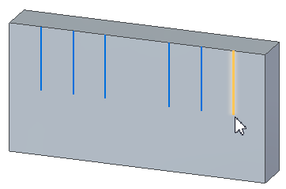
(Optional) On the Slot command bar, click the Options button to define properties for the slot.
For more information, see the Slot Options dialog box help topic.
-
Define the extent of the slot by doing the following:
On the command bar click one of the following:
Finite
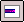
Through All
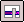
Through Next
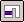
From/To
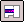
Use the dynamic arrows and the options displayed on the command bar to finish defining the feature extent.
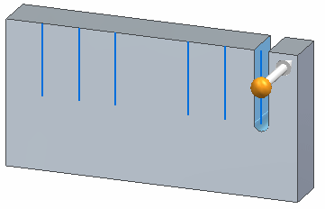
You can change the extent options at any time as you construct the feature.
Continue to click the sketches to define the remaining slot features.
You can drag the cursor to fence-select multiple paths at once. You can also use the Shift and Ctrl keys to add or remove paths from the set of fenced paths.
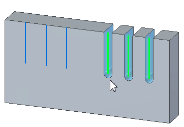
Right-click to finish placement of the slots.
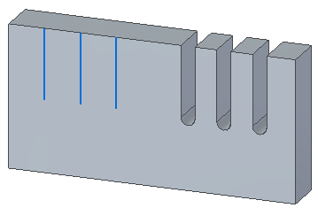
Construct multiple slots in the ordered environment
Choose Home tab→Solids group→Hole list→Slot .
(Optional) On the Slot command bar, click the Options button to define properties for the slot.
For more information, see the Slot Options dialog box help topic.
Do one of the following:
If you want to draw slot profiles, select a planar face or reference plane.
If you want to select profiles from an existing sketch, on the command bar, on the Create-From options list, click the Select From Sketch option. This option is not available if there are no sketches in the document.
Draw or select tangent and continuous sketches to create the slots.
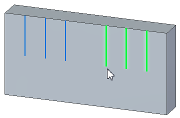
Click the Accept button
 .
.Define the extent of the slot by doing the following:
On the command bar click one of the following:
Finite
Through All
Through Next
From/To
Use the dynamic arrows and the options displayed on the command bar to finish defining the feature extent.
You can change the extent options at any time as you construct the feature.
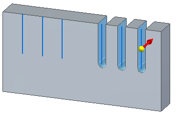
Click Finish to place the slots.
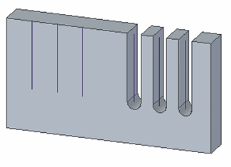